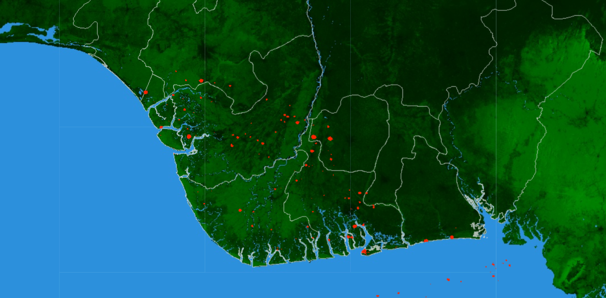

1
Industrial-Site Monitoring
Examines the locations and spatial distribution of gas-flaring and industrial activity across the study area.
An interactive geospatial project for exploring gas flaring, environmental pressure, surrounding land cover, and exposed communities across the Niger Delta using satellite observations and web-based spatial analysis.
Gas flaring is an important environmental and public-health concern in oil-producing landscapes. This project provides an accessible geospatial interface for investigating industrial locations, vegetation, waterways, settlements, and environmental conditions across the Niger Delta.
The application combines geospatial data, interactive visualization, and environmental context to make complex satellite information easier to explore and interpret.
Examines the locations and spatial distribution of gas-flaring and industrial activity across the study area.
Places industrial activity within the surrounding forest, wetland, water, settlement, and land-cover environment.
Allows users to zoom, inspect map layers, compare locations, and explore environmental patterns through a public-facing web map.
Communicates geospatial evidence that can support environmental monitoring, research, planning, and community awareness.
Click the project image below to open the live Google Earth Engine application.

Click this image to launch the Niger Delta Gas Flares interactive application.
The project translates satellite and spatial datasets into an accessible environmental intelligence application.
Establish the Niger Delta analysis extent and organize relevant administrative and environmental boundaries.
Combine Earth observation, land-cover, forest, water, settlement, and industrial-location information.
Examine spatial relationships between industrial activity, environmental resources, and nearby populated places.
Present the processed information through a web-based interface that researchers, communities, and decision-makers can explore.
Supports visual assessment of industrial pressure and surrounding environmental conditions.
Makes spatial information about gas flaring and affected landscapes easier for nontechnical audiences to access.
Demonstrates the use of remote sensing and geographic information systems for environmental intelligence and evidence-based planning.
Open the live application to examine environmental layers, industrial locations, forest-cover patterns, and candidate monitoring areas across the Niger Delta.